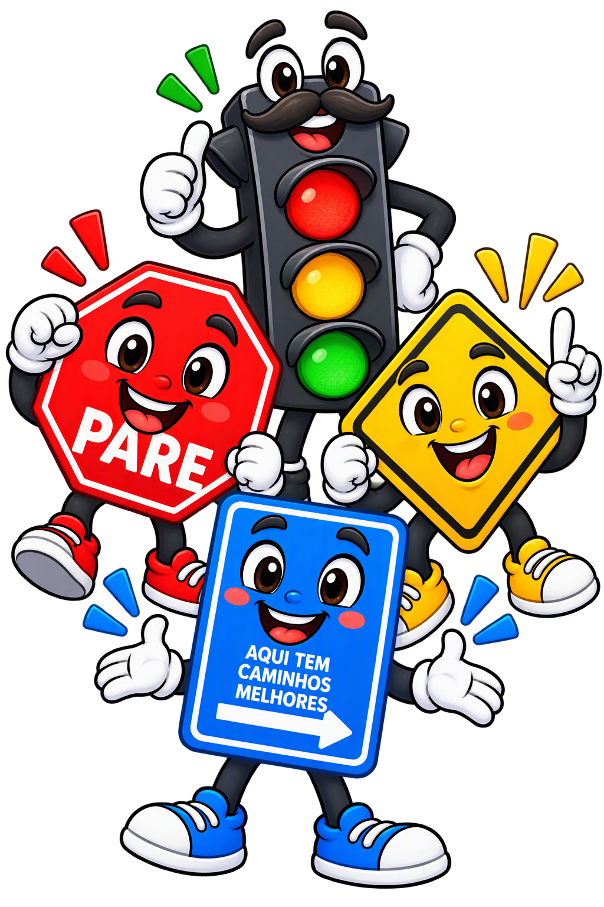

Regra
Entender que a sinalização orienta e protege a todos.
Educação para a mobilidade segura
A educação no trânsito é uma ferramenta de proteção, cidadania e prevenção. Por isso, trabalhamos com três jornadas essenciais: Jornada Educacional Infantil, Jornada Educacional Adulto e Jornada Reeducacional.

Nossas jornadas
Jornada Educacional Infantil
Nesta fase, a criança e o adolescente precisam entender que a rua é um espaço compartilhado, onde regras, atenção e respeito fazem a diferença entre uma viagem segura e um acidente evitável.


Jornada Educacional Adulto
Pais, professores, motoristas, ciclistas e pedestres são exemplos permanentes para a sociedade. Quando adultos respeitam a sinalização, evitam distrações e praticam a convivência segura, geram uma cultura de trânsito mais humana e responsável.
Jornada Reeducacional
A educação no trânsito também atua junto àqueles que cometeram infrações. A reeducação é uma oportunidade para entender os riscos, corrigir comportamentos e devolver ao cidadão a consciência de que sua ação afeta a vida de todos.

Reconhecimento da infração e do risco.
Reflexão sobre a responsabilidade social.
Compromisso com a mudança de hábitos.
Pilares da educação
Entender que a sinalização orienta e protege a todos.
Tomar decisões com atenção, respeito e cuidado.
Valorar a vida e a convivência em comunidade.
Juntos pela segurança